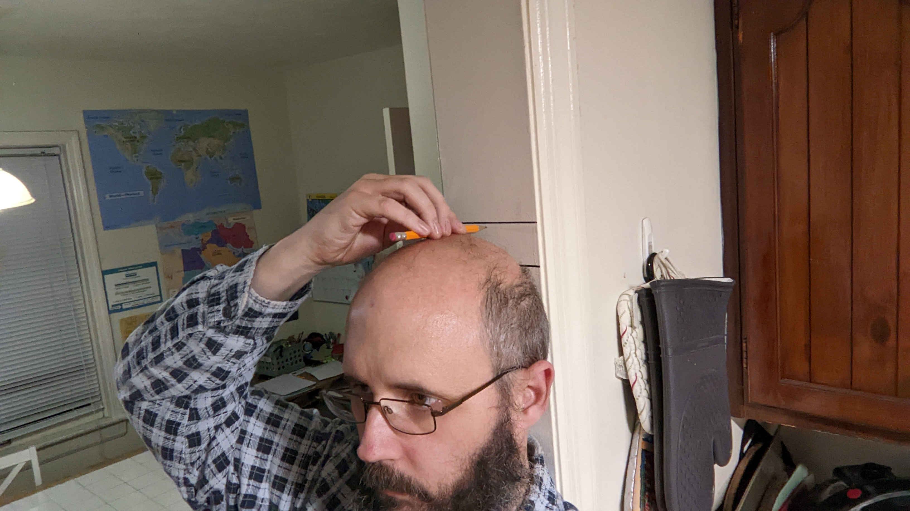
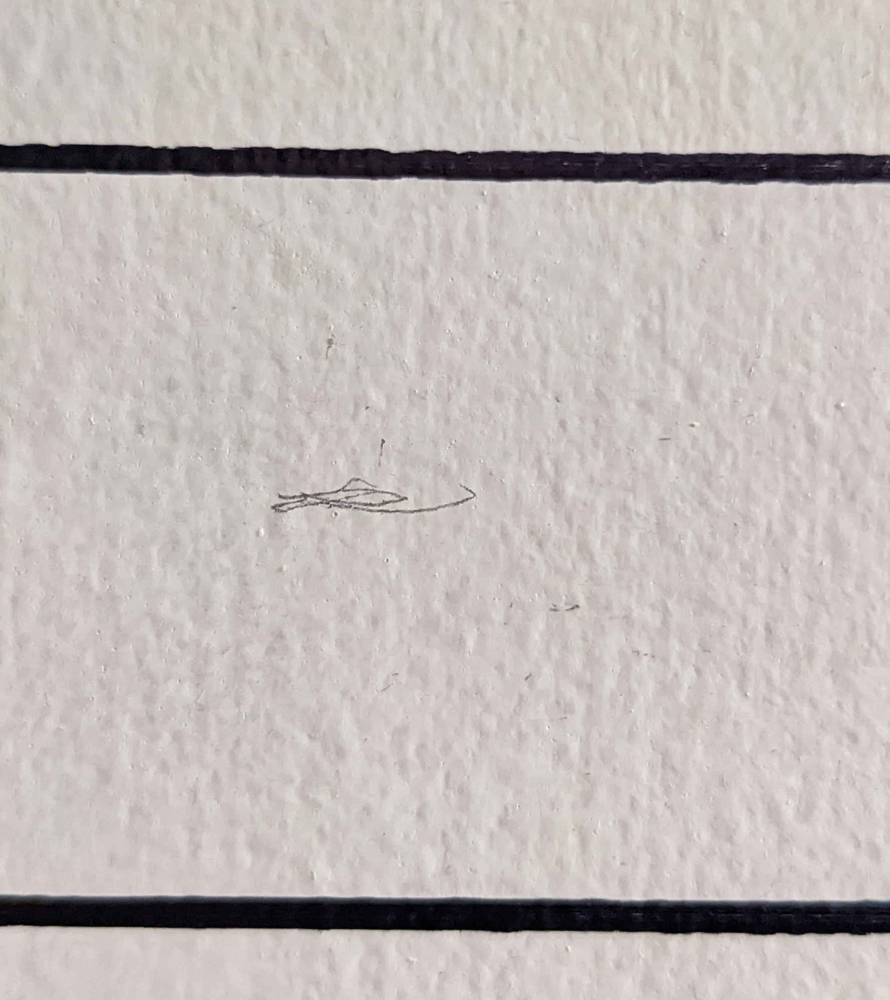
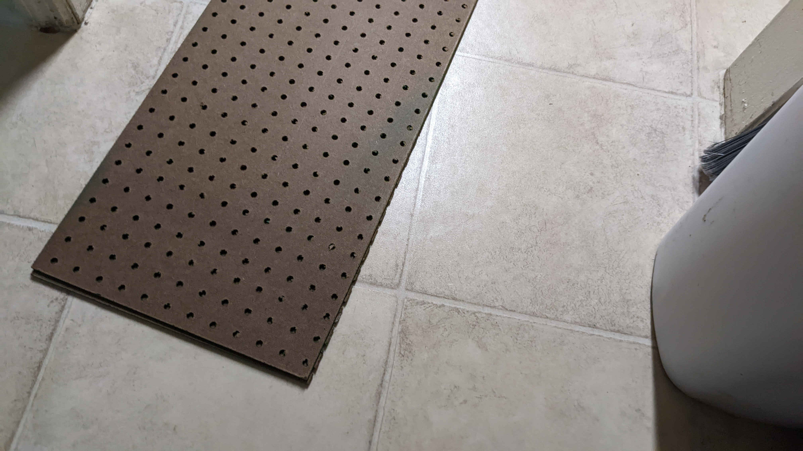
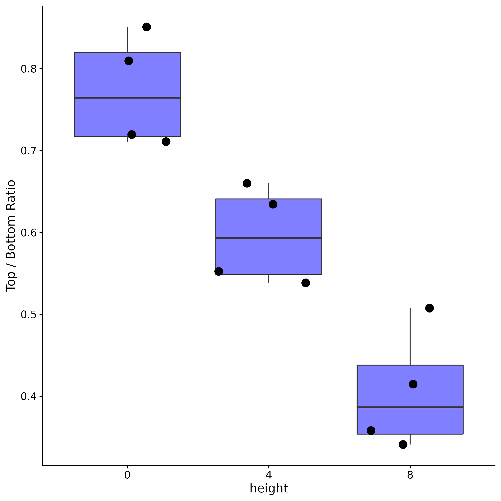

![]()

Why Measure Height Over Time?
I have a possibly really weird theory, that I’ve not been able to find any literature on. I think that over the course of a full menstrual cycle, that some women’s height changes. The reason I think this happens, is that my spouse and I are almost exactly the same height, 99% of the time we look at each other directly in the eyes. However, there are regularly certain days of the month when we both notice that she is either slightly taller or slightly shorter than usual.
So, it would be really, really cool if we could record heights daily and see if it changes in any measurable way. Even neater would be if we could get a large sample of people at various life stages and genders to measure their height daily and compare amongst all of them to see if this change in height is specific to people who are regularly menstruating.
Ideal Method
Ideally we need to be able to do this anywhere in the world, and people should be able to do it themselves, without needing a partner or to travel anywhere. If we can do it with photos that do not involve taking a photo of the person themselves, nor use any other photo data except the date the photo was taken (if we want to be able to line up changes in height with stages of the menstrual cycle), that would also be ideal to help protect participants identity.
What I Came Up With
Just FYI, last winter I tried a method that involved printed lines on paper, selfies, and eye detection using OpenCV. It was a total bust.
A month ago, I was hashing this over in my mind again, and realized if only we could get someone else to measure people with a mark on the wall every day it might possibly work. And then I realized that if there were permanent marks on the wall (using permanent marker), and the person marked their own height with a pencil in between them, then the pencil mark location in between the two lines might possibly be used to detect changes in height.
Figure 1 shows me measuring my own height, and Figure 2 an actual photo of one of my own pencil marks to test this on the right.

Testing It
To test the idea, I bought some relatively thin pegboard that has a thickness of 4mm (see Figure 3). I then marked my own height 4 times, with no pegboard (0), 1 (4 mm), and 2 (8 mm). Each marking was a full replicate of:
- standing up against the wall,
- making a pencil mark,
- moving away from the wall,
- taking a photo,
- erasing the pencil mark,
- repeat

I then cropped the photos to just include the pencil mark and the lines, and then used {stringr} to generate random names for each of the photos so I wouldn’t know which height photo I was annotating.
For this test, I opened each photo in Glimpse, and measured the distance in pixels from the pencil mark to the top line, and then the pencil mark to the bottom line using the measure tool, and recorded them in an quarto-doc.
Finally, I calculated the ratio of the distances in pixels between the top and bottom measured values.
Figure 4 shows the distributions for each height. We can see that there is a fair bit of variance in the ratios of top / bottom distances, however, the variance between heights is larger than the variance within heights, even at a difference of 4mm.

Therefore, I think this is doable. Even more so, if the lines are made a standard distance apart (say 5 cm or 2 in), then we should be able to calculate actuall changes in height. And I think we could easily make a Shiny app that loads a photo, and records three mouse clicks to annotate the top line location, height location, and bottom location, making it easier to extract measurements from a given photo.
So people anywhere in the world, with at least a digital camera, could make the permanent lines, self measure using a pencil and photograph every day (erasing the pencil mark). We could use a form to upload their photos, and then take information on reproductive status, age, and dates of menses (if they are open to providing them). To do this right we would want people of various genders / sexes, and at multiple stages of life: pre-pubescent, puberty, pregnant, with and without birth control, post-menopausal, etc.
I’m open to other ideas, but I think Figure 4 shows that it could possibly work. I do plan to try taking my own height and my spouses (peri-menopausal) for a couple of months and see what we get for preliminary data.
Reuse
Citation
BibTeX citation:
@online{mflight2022,
author = {Robert M Flight},
title = {Measuring {Changes} in {Height} {Over} {Time}},
date = {2022-12-07},
url = {https://rmflight.github.io/posts/2022-12-07-measuring-changes-in-height-over-time},
langid = {en}
}
For attribution, please cite this work as:
Robert M Flight. 2022. “Measuring Changes in Height Over
Time.” December 7, 2022. https://rmflight.github.io/posts/2022-12-07-measuring-changes-in-height-over-time.